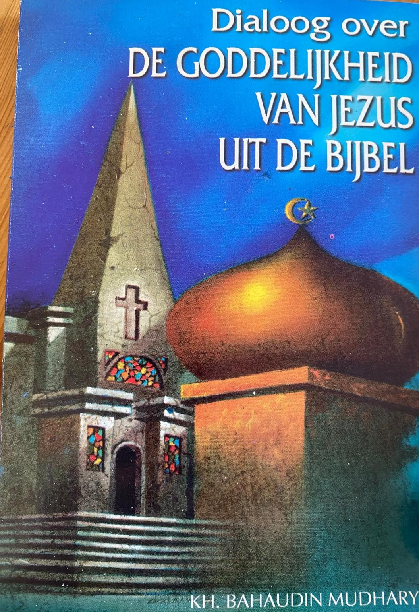
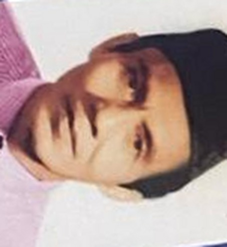

A K.H. Bahaudin Mudhary
B Antonius Widuri / dhr. Markan
Teks asli terjemahan Belanda (1998) — ejaan dipertahankan apa adanya.
Dialoog over de Goddelijkheid van Jezus adalah catatan utuh dialog sembilan malam di Sumenep (1970) antara K.H. Bahaudin Mudhary, seorang ulama, dan Antonius Widuri, seorang Katolik. Seluruh teks bukunya bisa dibaca gratis di halaman ini.

Maret 1970, Sumenep, Madura. Seorang akuntan Katolik bernama Antonius Widuri datang menemui K.H. Bahaudin Mudhary dengan satu permintaan: berdialog tentang ketuhanan Yesus — jujur, terbuka, dan tanpa paksaan. Kesepakatannya sederhana: percakapan dicatat kata demi kata, dan tidak boleh ada yang saling menyinggung.
Dialog itu berlangsung sembilan malam. Caranya khas: Antonius diminta membuka Alkitabnya sendiri, membacakan ayatnya, lalu keduanya menimbangnya dengan akal sehat — ayat demi ayat, tenang dan saling menghormati. Buku ini adalah transkrip utuh percakapan itu, lengkap dengan dua pidato penutupnya.
Yang termuat di sini adalah terjemahan Belanda (1998) dari buku asli berbahasa Indonesia "Dialog Masalah Ketuhanan Jesus". Seluruh teksnya bisa dibaca gratis lewat daftar isi di bawah — halaman ini tidak menjual apa pun.
Klik sebuah bagian untuk membuka teks lengkapnya. Teks buku dalam bahasa Belanda.
“Wij moeten tolerant zijn met alle godsdiensten.”— K.H. Bahaudin Mudhary, slotspeech
“Ik zoek de ware godsdienst… die overtuigt door rationeel onderzoek.”— Antonius Widuri, de eerste avond
“Het is dus puur een dialoog tussen twee personen.”— Het begin van de ontmoeting

K.H. Bahaudin Mudhary (1921–1979) adalah ulama kelahiran Sumenep, Madura. Ia menguasai banyak bahasa — Indonesia, Arab, Inggris, Jerman, Belanda, Prancis — menggemari filsafat dan ilmu kerohanian, serta piawai memainkan beragam alat musik.
Hampir seluruh hidupnya diabdikan untuk mengajar: guru sekolah Muallimin Muhammadiyah, kepala sekolah, dosen, pendiri sekolah Islam di Madura (1949) dan Akademi Metafisika (1960-an). Dalam dialog ini ia dikenang karena satu hal: hafal teks Alkitab di luar kepala, dan menjawab semuanya dengan logika yang tenang.
Teks asli terjemahan Belanda (1998) — ejaan dipertahankan apa adanya.